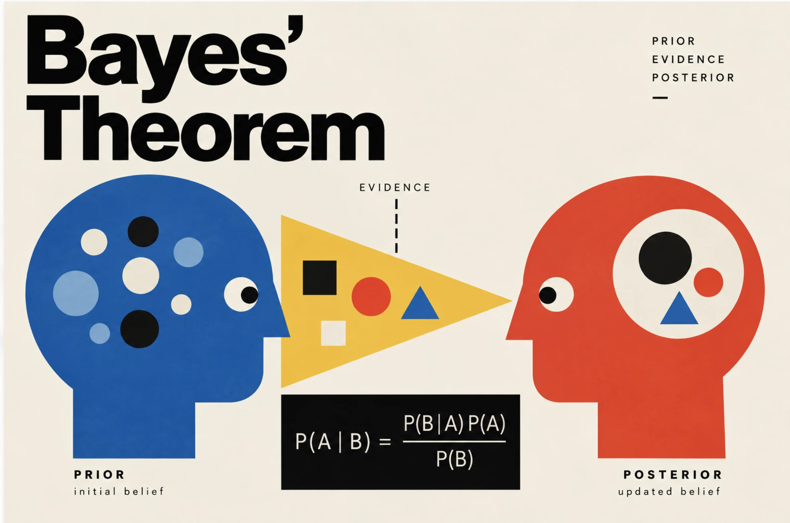
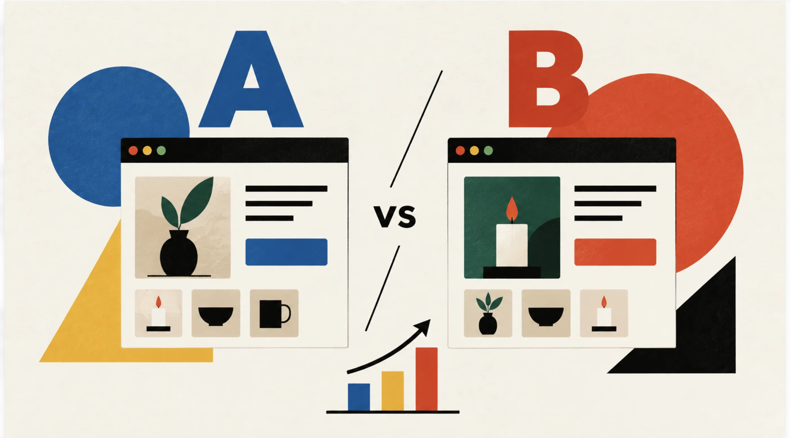
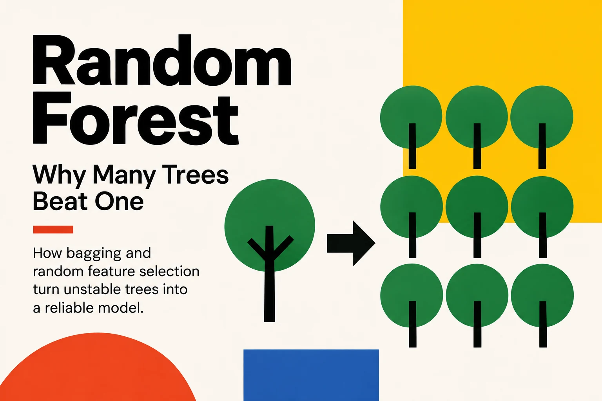

Knowledge
Nerding Out on Data.
Statistics, machine learning, and everything in between.
A collection of visual explorations into the fascinating logic behind data.
Track 1
Statistics
The foundations: describe data, reason about uncertainty, and test whether a difference is real.
01Data fundamentals
The basics of working with data: summarise a dataset, explore it, and structure a project from question to decision.

02Probability
From single events to distributions: the language of uncertainty.

Probability Bayes’ TheoremHow to update a belief with new evidence: prior, likelihood, posterior, and why an alert can still be wrong.
03Sampling
How to choose the data you analyze, and how to avoid bias.

04Inference & experiments
Test whether a change really made a difference.

Experimentation A/B TestingHow to design an experiment and tell whether a change really made things better.
05Regression analysis
Model how a numeric outcome depends on other variables: fit a line, check its assumptions, and evaluate the fit.
 Regression analysis
Simple Linear Regression
Regression analysis
Simple Linear Regression
Predict sales from advertising spend and learn what the intercept and slope of a fitted line really mean.
06Generalized linear models
Extend regression to outcomes that are not a plain number: yes or no, counts, rates.

Track 2
Machine Learning
Prepare data, build models that predict and group, and check that they generalise.
07Model fundamentals
What every model needs: well-built features, and the right level of complexity.
 Model fundamentals
Feature Engineering
Model fundamentals
Feature Engineering
How to turn raw columns into features a model can learn from, without leaking the test set.
08Classification
Predict which category an observation belongs to: yes or no, churn or stay, spam or not.

Classification Random Forest and BaggingCombine many decision trees so that one unlucky sample no longer decides the prediction.
09Unsupervised learning
Find structure in data without labels: customer segments, similar products, hidden patterns.